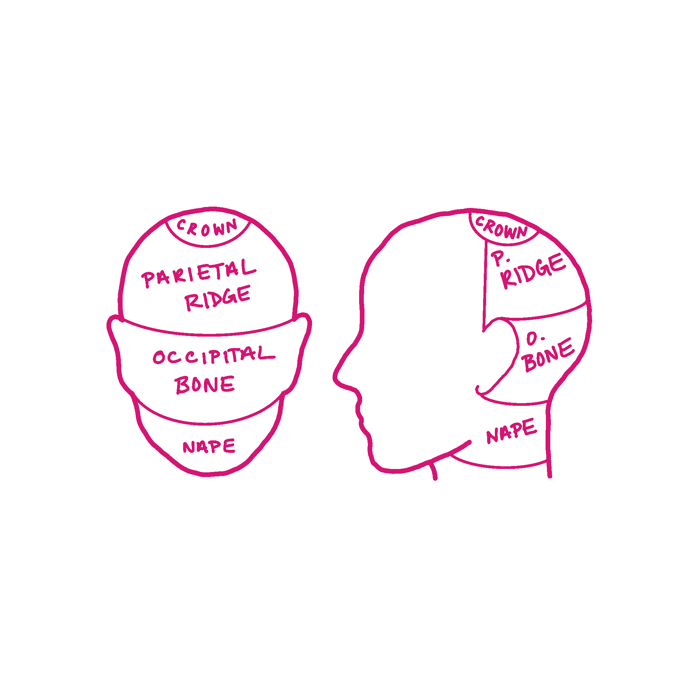
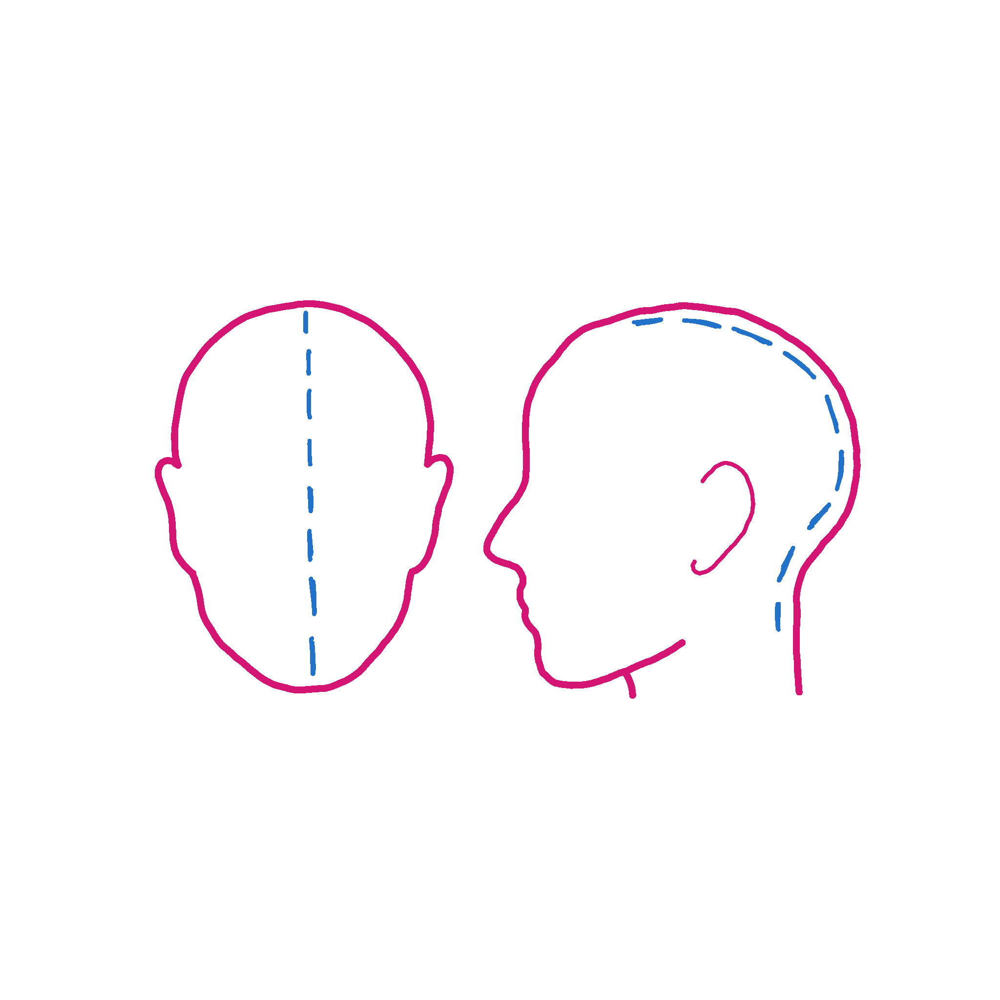
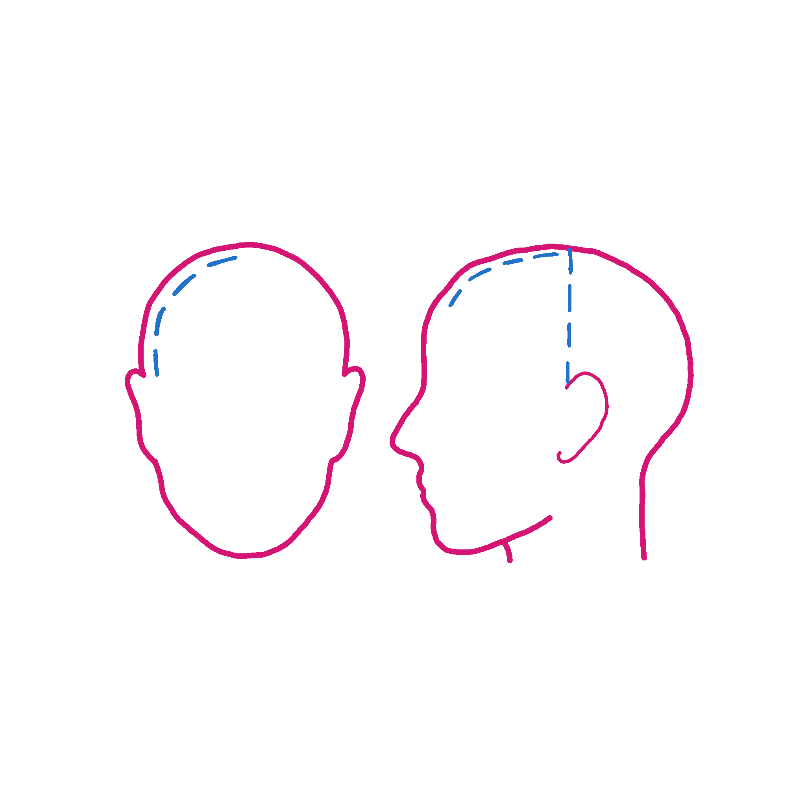

Grab a peice of your hair. On a microscopic level that strand is a complex being with layers, that when understood can be manipulated correctly to produce amazing results.
The three levels of the hair in order from outside to inside are the cuticle, the cortex, and the medulla.
The cuticle is a protective layer of dead cells on your hair. It can break and lift, so when you see split ends that's the cuticle fraying from the hair. Haircuts prevent the fraying of the cuticle at the bottom of your hair from spreading up and damaging the hair further.
The cortex contains the natural melanin (pigment) and keratin (protein) of your hair. This layer is the one we want to access when changing our hair color (darker or lighter.) We do this with the help of Developer.
The medulla is the final layer, and not everyone has it. Lighter and finer hair tends to lack the medulla, and it is usually found only in coarse/thick hair. It doesn't contribute really to what we're discussing, but it is important to know it exsists. When hair is severely damaged, odds are the medulla has been revealed and the hair will need to heal before attempting any chemical hair processes.
Hair Density refers to the number of hair strands growing out of each square inch of your head. You have have heard people say "I have thick hair" or "I have thin hair" and this is what those individuals are referring to. It is important to be aware of how much hair you have going in, as you can estimate time and amount of product needed more efficiently. You can determine your hair density a few ways, one being putting your hair in a ponytail and observing the circumference. Another way is to pull a peice of hair towards you, and if you can easily see the strand odds are you have thicker hair. If the strand is less visible, you have thinner hair.
Hair Stylist's use what are called "levels" to determine hair color.
It is a 1 - 10 numbered system, with 1 being the darkest and 10+ being the lightest. (See photo.)
It is important to make note of this system, as you'll encounter these numbers when you go to change your hair color.
Developer is a chemical mix combined with certain prducts to ensure they work correctly. The main ingredient in this product is hydrogen peroxide, which correspondes to the level or number developer.
Hydrogen Peroxide lifts the first level of your hair (the cuticle) and allows product to penetrate the second layer (the cortex), where the color lies.
Developer comes in volumes (vol), usually represented in increments of 10, 20, 30, 40 and 50.
This essentially translates to how much of your cuticle will be lifted. 10 volume, being a lower volume, would only lift the cuticle slightly, and deposit the color. As you go up in volume, the effects of the chemical reaction increases and your hair is lifted higher. 20 vol lifts the hair 2 levels, 30 vol 3 level, 40 vol 4 levels, 50 vol 5 levels.
You may also mix developers to create a stronger volume. Say you need a 30 vol for your projectand the supply store only has 10 vol and 20 vol, you can combine those to get your desired 30 vol.
You mix developer with both bleach and certain hair dyes to acheive different outcomes. The developer is the crucial ingredient to recieving your desired outcome. The most commonly used volumes are 10 - 30.
When attempting to perform a haircut or hair color, there is some basic sectioning that comes in handy.

When looking at the anatomy of the skull, youll want to locate the crown of the head we're working on. from that point, you can draw a straight line down from the crown to the nape of the neck, and have your back sections. you'll then want to draw a line horizontally with your comb, and drop down the bottom layer of the hair. When cutting hair this is a solid way to establish your baseline. For hair coloring, it is usually recommended to start at the back, as there is less heat in that area and the processes usually take longest in that area. You should use this horizontal line as a base for removing hair from your sections when completing a process.

For the front sections, you'll part the hair in the middle. return to the crown and draw a line from that spot to the back of the ear. Doing this on both sides will create your front sections.

For most processes, you'll want to remove an inch from the bottom for your first section. You'll work your way upwards during the process. This helps create a guide line during haircuts, and a more organized work flow when coloring or lightening hair.